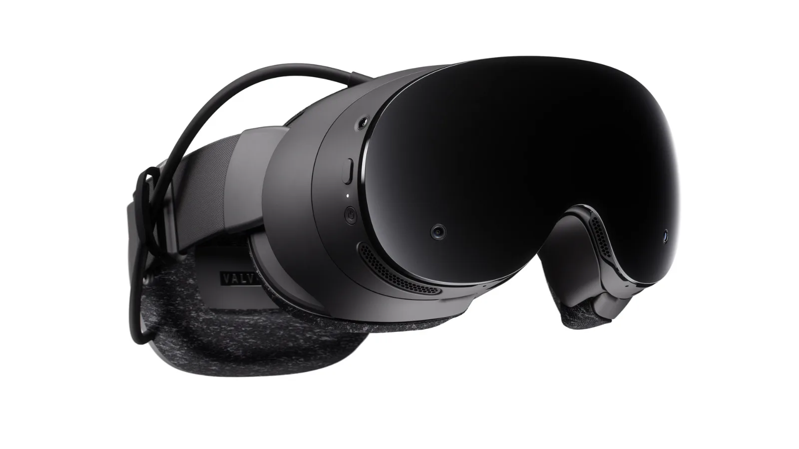

Luiso · 15 de septiembre de 2026 · 2 min de lectura
Valve vuelve a apostar por la realidad virtual con Steam Frame, un nuevo visor que busca hacer algo bastante diferente a la mayoría de los dispositivos VR actuales: combinar juegos de realidad virtual con juegos tradicionales de PC.
El dispositivo comenzó su lanzamiento el 15 de septiembre de 2026 y representa el primer nuevo visor VR oficial de Valve desde Valve Index, presentado originalmente en 2019.
Su propuesta se apoya en tres características principales: conexión inalámbrica con una PC, ejecución de juegos VR directamente desde el visor y soporte para juegos que no fueron diseñados para realidad virtual.
Uno de los aspectos más particulares de Steam Frame es que Valve no lo concibió únicamente como un dispositivo para realidad virtual.
El visor puede utilizarse para acceder a la enorme biblioteca de Steam y ejecutar juegos tradicionales que no tienen soporte VR, ampliando considerablemente el tipo de contenido que puede consumirse desde el dispositivo.
La idea es convertirlo en una especie de computadora portátil para juegos que, cuando el usuario lo desea, también puede transformarse en un visor de realidad virtual.
Steam Frame puede ejecutar determinados juegos directamente desde el dispositivo, sin necesidad de permanecer conectado a una computadora.
Sin embargo, las primeras evaluaciones de AUTOMATON señalan una limitación importante: el modo standalone no tiene potencia suficiente para competir directamente con una PC gaming en todos los escenarios.
La fortaleza del dispositivo está más relacionada con la flexibilidad: poder utilizarlo de manera inalámbrica con una PC cuando se necesita potencia adicional y recurrir al funcionamiento independiente cuando el juego o la aplicación lo permiten.
En Japón, Steam Frame se comercializa a partir de 199.980 yenes para el modelo de 256 GB (unos 1289 dóalres), mientras que la versión de 1 TB cuesta 244.980 yenes (aproximadamente, 1580 dólares).
El precio lo coloca claramente en el segmento premium de los dispositivos VR.
A cambio, Valve apuesta por un ecosistema basado directamente en Steam y por una filosofía diferente a la de los visores exclusivamente centrados en realidad virtual.
El lanzamiento de Steam Frame representa, en definitiva, otro paso de Valve para convertir SteamOS en una plataforma que pueda trascender la PC tradicional, algo que puede tener implicaciones importantes para el futuro del ecosistema Steam.